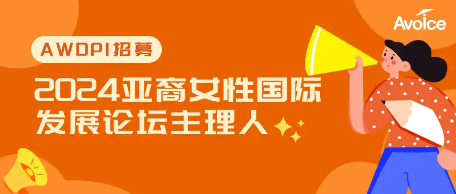

论坛简介
“亚裔女性国际发展论坛”是AWDPI亚裔女性国际发展计划的品牌项目之一，已连续举办两届，得到了各国华人、公益组织以及媒体的高度关注和参与，来自联合国妇女署、国际组织、学术机构、高校和科创公司等海内外的近百位专家学者，以多行业性别发展现状、实践经验和研究成果为依托，围绕科技、公益、职场、文化、法律、心理等主题展开探讨，在反性别暴力理论和实践方面为与会者提供了新颖视角和深刻洞察。
欢迎点击以下链接，
查看过去两届论坛的精彩内容：
「2023AWDPI亚裔女性国际发展论坛」预告链接

「2023AWDPI亚裔女性国际发展论坛」回顾链接
「2022AWDPI亚裔女性国际发展论坛」预告链接

「2022AWDPI亚裔女性国际发展论坛」回顾链接
★ 论坛往期嘉宾 ★
>> 向右滑动查看
“
【2024亚裔女性国际发展论坛】即将举办
“论坛主理人”虚位以待
热爱性别平等和公益事业的你
想要加入吗？
今年夏季，AWDPI计划再度举办「AWDPI亚裔女性国际发展论坛」。
本届论坛预计线上举行，为期两天，包含主题演讲、圆桌对谈、论文评议三大板块，届时将邀请相关领域的专家学者与青年人才，围绕性别暴力、海外女性劳工权益、女性职业发展、女性行动力与影响力、女性健康等议题展开深度探讨。
现为本届论坛招募2-8名论坛主理人。
论坛主理人作为某一主题或分论坛的主要负责人，将在论坛筹备过程中发挥至关重要的作用。论坛主理人需要在反性别暴力理论和实践方面具备一定的经验与见解，关注时事焦点和热门的交叉领域，构建精彩的观点与思维碰撞，并且能够高效组织管理论坛的主题策划、嘉宾邀请、活动宣发等一系列工作。希望论坛主理人 在6-8月能够保证约一周10小时的投入。
希望优秀的你：
关注消除性别暴力、海外劳工、女性职业发展、女性行动力与影响力、女性健康等议题；
团队协作意识强；
有较强的语言组织能力及沟通能力；
学术专业性强、有较强的文章功底；
应变能力强（善于发现、提出并解决问题）；
有论坛筹办经验者优先；
/
投递要求：
个人简历（中文/英文均可）；
一份简单的论坛策划案。
论坛策划案要求及参考信息：
- 论坛现有主题为「Orange the world—共建无暴力的未来」与「女性身份塑造新纪元」，请从中选择一个主题撰写相应的策划案，具体议题不限；或自行拟定一个主题方向，并围绕该主题撰写策划。
- 论坛时间：本届论坛预计为期两天，时间段为北京时间9:00-12:00，14:00-18:00，可根据时长设计多场的「主题演讲」与「圆桌对谈」，场次数量不限。
- 论坛形式：本届论坛预计线上举行，每个大主题下面分设不同议题的「主题演讲」与「圆桌对谈」，具体主题自定，圆桌对谈需包含对谈问题清单（可选），议题可参考：
演讲——寻求支持：家庭暴力幸存者的求助指南；
演讲——实践之路：从经验中学习，支持家暴受害者的有效策略；
演讲——力与光：亚裔女性劳工的挑战与赋能；
演讲——再谈Barbie：文化对于女性身份的塑造；
圆桌对谈——自我接纳，拥抱身体和心理健康；
圆桌对谈——华人留学生在海外校园中的性别暴力问题；
圆桌对谈——引领潮流的她；
- 字数要求：200-400字左右（中文）。
- 内容要求：包括但不限于标题、关键词、议题背景、主体内容、开展形式、拟邀嘉宾画像等；主题明确，框架清晰，逻辑严谨，简洁明了，用词专业。
志愿者福利：
参与并完成论坛筹备工作者将获得由AWDPI亚裔女性国际发展计划开具的论坛志愿者证明；
表现优异者将获得AWDPI其他志愿者岗位的内推资格。
投递方式：
感兴趣的伙伴请将简历与策划案发送至 [email protected]，邮件标题格式为「AWDPI主理人申请-姓名」
报名截止日期：
6月15日北京时间晚24:00
如有任何问题欢迎联系论坛负责人于悦
撰稿｜于悦
排版/封面｜游舸